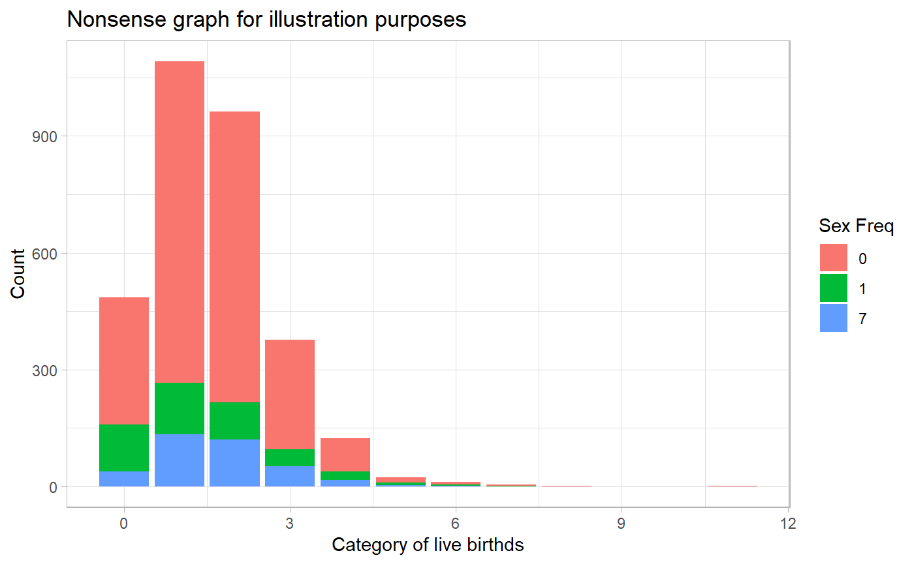

Let’s begin by examining the AddHealth dataset
qacdata::addhealth
#> # A tibble: 5,114 x 979
#> RACE ETHNICITY h4od1y iyear4 AID BIO_SEX agew1 IMONTH4 IDAY4 MACNO4
#> <dbl> <dbl> <dbl> <dbl> <chr> <dbl> <dbl> <dbl> <dbl> <dbl>
#> 1 2 0 1976 2008 5710~ 2 19.4 5 6 2.29e6
#> 2 5 0 1976 2008 5710~ 1 20.4 5 22 2.29e6
#> 3 2 0 1981 2008 5710~ 1 15.2 11 2 2.29e6
#> 4 2 0 1981 2008 5711~ 1 14.9 6 29 2.29e6
#> 5 2 0 1979 2008 5711~ 1 17.3 11 11 2.29e6
#> 6 5 0 1979 2008 5711~ 1 NA 3 6 2.29e6
#> 7 2 0 1982 2008 5711~ 2 13.7 5 9 2.29e6
#> 8 5 0 1982 2008 5712~ 2 14.3 6 12 2.29e6
#> 9 1 1 1979 2008 5713~ 1 17.5 6 21 2.29e6
#> 10 3 0 1978 2008 5714~ 1 17.9 4 20 2.29e6
#> # ... with 5,104 more rows, and 969 more variables: INTID4 <dbl>,
#> # BIO_SEX4 <dbl>, VERSION4 <chr>, BREAK_Q <chr>, PRYEAR4 <dbl>,
#> # PRETEST4 <dbl>, PRISON4 <dbl>, H4OD1M <dbl>, H4OD2A <dbl>,
#> # H4OD2B <dbl>, H4OD2C <dbl>, H4OD2D <dbl>, H4OD2E <dbl>, H4OD2F <dbl>,
#> # H4OD3 <dbl>, H4OD4 <dbl>, H4OD5 <dbl>, H4OD6M <dbl>, H4OD6Y <dbl>,
#> # H4OD7 <dbl>, H4WP1 <dbl>, H4WP2M <dbl>, H4WP2Y <dbl>, H4WP3 <dbl>,
#> # H4WP4 <dbl>, H4WP5 <dbl>, H4WP6 <dbl>, H4WP7 <dbl>, H4WP8M <dbl>,
#> # H4WP8Y <dbl>, H4WP9 <dbl>, H4WP10 <dbl>, H4WP11 <dbl>, H4WP12 <dbl>,
#> # H4WP13 <dbl>, H4WP14 <dbl>, H4WP15M <dbl>, H4WP15Y <dbl>,
#> # H4WP16 <dbl>, H4WP17 <dbl>, H4WP18 <dbl>, H4WP19 <dbl>, H4WP20 <dbl>,
#> # H4WP21 <dbl>, H4WP22 <dbl>, H4WP23 <dbl>, H4WP24 <dbl>, H4WP25 <dbl>,
#> # H4WP26 <dbl>, H4WP27 <dbl>, H4WP28 <dbl>, H4WP29M <dbl>,
#> # H4WP29Y <dbl>, H4WP30 <dbl>, H4WP31 <dbl>, H4WP32 <dbl>, H4WP33 <dbl>,
#> # H4WP34 <dbl>, H4WP35 <dbl>, H4WP36 <dbl>, H4WP37 <dbl>, H4WP38 <dbl>,
#> # H4WP39 <dbl>, H4WP40 <dbl>, H4WS1 <dbl>, H4WS2 <dbl>, H4WS3A <dbl>,
#> # H4WS3B <dbl>, H4WS3C <dbl>, H4WS3D <dbl>, H4WS3E <dbl>, H4WS3F <dbl>,
#> # H4WS3G <dbl>, H4WS3H <dbl>, H4WS4 <dbl>, H4WS5 <dbl>, H4GH1 <dbl>,
#> # H4GH2 <dbl>, H4GH3M <dbl>, H4GH3D <dbl>, H4GH3Y <dbl>, H4GH4A <dbl>,
#> # H4GH4B <dbl>, H4GH5F <dbl>, H4GH5I <dbl>, H4GH6 <dbl>, H4GH7 <dbl>,
#> # H4GH8 <dbl>, H4GH9 <dbl>, H4GH10 <dbl>, H4GH11H <dbl>, H4GH11M <dbl>,
#> # H4GH11T <dbl>, H4GH12 <dbl>, H4GH13H <dbl>, H4GH13M <dbl>,
#> # H4GH13T <dbl>, H4HS1 <dbl>, H4HS2A <dbl>, H4HS2B <dbl>, ...There are 979 columns/variables in this dataset. Normally, we would find variables of interesting by finding the codebook online or accessing a PDF version and hitting Ctrl + F. With the qacdata packing this search can be done in R
data_search("birth", "AddHealth")
#> # A tibble: 45 x 4
#> dataset col_id description notes
#> <chr> <chr> <chr> <list>
#> 1 AddHealth H4OD1M Respondent's date of birth <tibble [1~
#> 2 AddHealth H4OD1Y Respondent's date of birth <tibble [1~
#> 3 AddHealth H4SE2~ In the past 12 months, did you or your par~ <tibble [6~
#> 4 AddHealth H4SE2~ In the past 12 months, did you or your par~ <tibble [6~
#> 5 AddHealth H4SE2~ In the past 12 months, did you or your par~ <tibble [6~
#> 6 AddHealth H4SE2~ In the past 12 months, did you or your par~ <tibble [6~
#> 7 AddHealth H4SE2~ "In the past 12 months, did you or your pa~ <tibble [6~
#> 8 AddHealth H4SE2~ In the past 12 months, did you or your par~ <tibble [6~
#> 9 AddHealth H4SE2~ In the past 12 months, did you or your par~ <tibble [6~
#> 10 AddHealth H4SE2~ In the past 12 months, did you or your par~ <tibble [6~
#> # ... with 35 more rowsWe find 45 possible variables within the AddHealth dataset that’s description contains the word “birth”. H4TR10 by its description is on “How many live births resulted from (this pregnancy/these pregnancies)?”.
If there are more variables that can we viewed on your console, evoke the View function.
“H4SE27” seems interesting. Let’s find more about it
data_search("sex", "AddHealth") %>%
get_description("H4SE27")
#> [1] "In the past 12 months, did you have sex with more than one partner at around the same time?"Lets grab both columns and work with them.
First let’s download the data
data_download("AddHealth", "H4TR10")
#> # A tibble: 5,114 x 1
#> H4TR10
#> <dbl>
#> 1 4
#> 2 97
#> 3 97
#> 4 97
#> 5 1
#> 6 1
#> 7 3
#> 8 1
#> 9 2
#> 10 2
#> # ... with 5,104 more rowsLet’s recode missing values based on the information we got from the get_note function
data_search("birth", "AddHealth") %>%
get_note("H4TR10")
#> # A tibble: 13 x 4
#> response_value response_label frequency percent
#> <int> <chr> <int> <dbl>
#> 1 0 0 live births 1544 9.83
#> 2 1 1 live birth 3355 21.4
#> 3 11 11 live births 3 0.02
#> 4 2 2 live births 2887 18.4
#> 5 3 3 live births 1240 7.9
#> 6 4 4 live births 362 2.31
#> 7 5 5 live births 97 0.62
#> 8 6 6 live births 23 0.15
#> 9 7 7 live births 10 0.06
#> 10 8 8 live births 1 0.01
#> 11 96 refused 1 0.01
#> 12 97 legitimate skip 6174 39.3
#> 13 98 don't know 4 0.03
data_search("sex", "AddHealth") %>%
get_note("H4SE27")
#> # A tibble: 6 x 4
#> response_value response_label frequency percent
#> <chr> <chr> <int> <dbl>
#> 1 . missing 24 0.15
#> 2 0 no 11300 72.0
#> 3 1 yes 2110 13.4
#> 4 6 refused 9 0.06
#> 5 7 legitimate skip 2256 14.4
#> 6 8 don't know 2 0.01
cleaned_df <- data_download("AddHealth", "H4TR10", "H4SE27") %>%
transmute(births = ifelse(H4TR10 >= 96, NA, H4TR10),
sex = ifelse(H4SE27 >= 8, NA, H4SE27))
cleaned_df
#> # A tibble: 5,114 x 2
#> births sex
#> <dbl> <dbl>
#> 1 4 0
#> 2 NA 7
#> 3 NA 0
#> 4 NA 1
#> 5 1 0
#> 6 1 0
#> 7 3 0
#> 8 1 0
#> 9 2 0
#> 10 2 0
#> # ... with 5,104 more rowsNow we are ready to visualize
library(ggplot2)
#> Warning: package 'ggplot2' was built under R version 3.6.1
theme_set(theme_light())
cleaned_df %>%
na.omit() %>%
count(births, sex) %>%
ggplot(aes(x = births, y = n, fill = factor(sex))) +
geom_col() +
labs(title = "Nonsense graph for illustration purposes",
x = "Category of live birthds",
y = "Count",
fill = "Sex Freq")